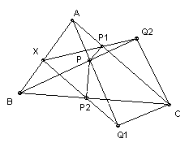

ABC is a triangle and P an interior point. Let the feet of the perpendiculars from P to AC, BC be P1, P2 respectively, and let the feet of the perpendiculars from C to AP, BP be Q1, Q2 respectively. Show that P1Q2 and P2Q1 meet on the line AB.
Solution

All the angles PP1C, PP2C, PQ1C, PQ2C are 90o, so P1, P2, Q1, Q2 lie on the circle diameter PC.
The result now follows immediately from Pascal's theorem applied to the hexagon P1PP2Q1CQ2. It tells us that the points of intersection of the three pairs of lines P1C, PQ1 (intersection A), and P1Q2, P2Q1 (intersection X), and PQ2, P2C (intersection B) are collinear.

© John Scholes
jscholes@kalva.demon.co.uk
1 Jan 2003
Last corrected/updated 1 Jan 03